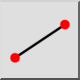
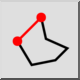

Čára zadaná 2 body
Panel nástrojů / Ikona:


Nabídka: Kreslení > Čára > Čára zadaná 2 body
Zkratka: L, I
Příkazy: line | ln | li | l
Popis
Tento nástroj umožňuje nakreslit posloupnost jedné nebo více rovných čar.
Použití
- Vyberte požadovaný typ čáry v panelu možností.
- Určete počáteční bod prvního segmentu čáry. Můžete použít myš nebo zadat souřadnici do konzoly.
- Určete koncový bod prvního segmentu čáry.
- Určete koncové body dalších segmentů čáry. Kliknutím na tlačítko „Zavřít” v panelu možností uzavřete posloupnost:

Pokud potřebujete vrátit zpět jeden segment čáry, můžete tak učinit kliknutím na tlačítko „Zpět”:
- Délku nebo úhel čáry můžete nastavit na pevné hodnoty pomocí příslušných polí v panelu možností.